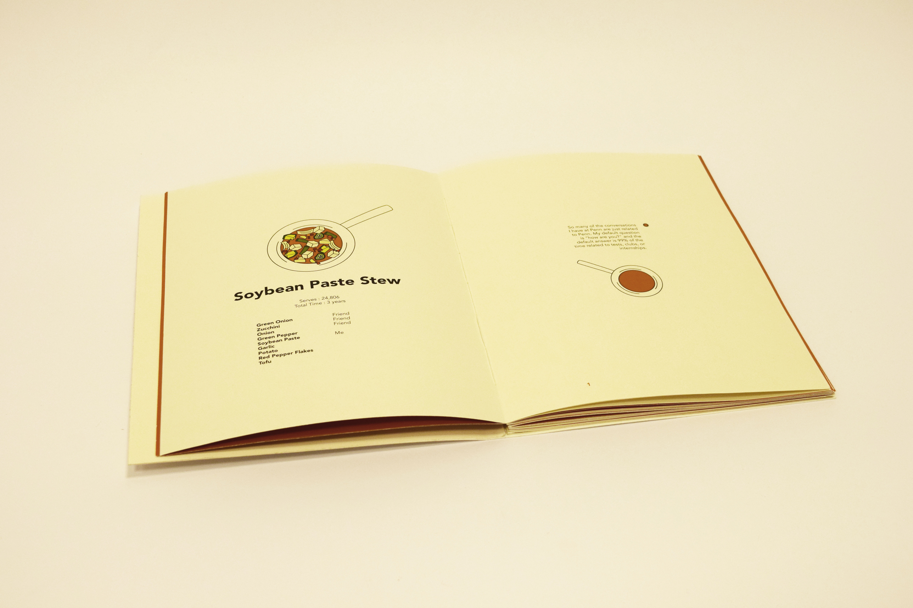

Mastering the Art of Soybean Paste Stew
Overview
A cookbook turned diary about my favorite dish, soybean paste stew, and life. Using the metaphor of cooking to life, the book goes through many attempts at making the stew, learning to make mistakes and try again. The narrator is the soybean paste, also known as me, and the other ingredients play different people and aspects of my life.
Tools
Adobe Illustrator, Adobe InDesign
Ingredients
Everything you need to make soybean paste stew!

Typeface
I used Avenir to set the text because it is cold and clean enough to portray cooking instructions, but also round and soft enough to tell a little story about my life.
Zucchini
I lost sense of who I was.
Hand Bound Book
The final book was bound in a coptic stitch pattern and printed on Cougar Off-White. If you would like to see the whole thing, shoot me an email and I will gladly send over a pdf!


